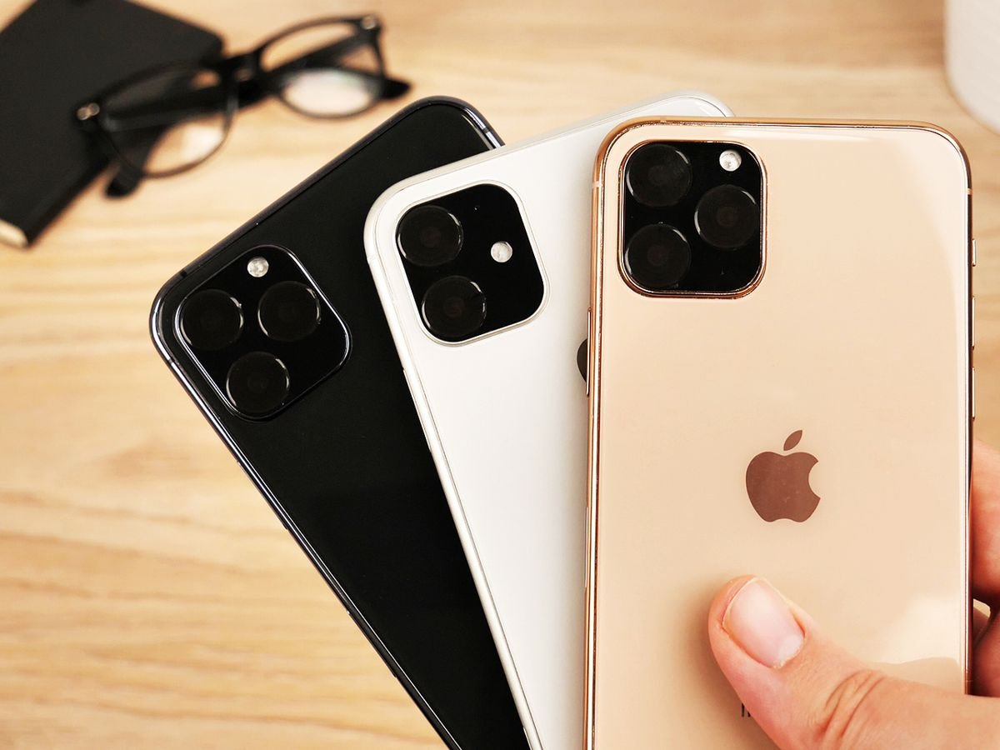

Apple iPhone 11 Pro modeli diagonaliga 5,8 dyuymlik, tasvir aniqligi 2436x1125 piksel bo‘lgan Super Retina XDR displey bilan jihozlangan.
Undagi OLED-panelning maksimal yorqinligi 1200 kd/m2
Mazkur smartfon korpusi qayta ishlangan alyuminiydan va, Tim Kuk ta’kidlashicha, ushbu sanoatda qo‘llanganlari orasida eng mustahkam shishadan tayyorlangan. O‘lchamlari 144x71,4x8,1 millimetrni tashkil etadi,
vazni esa 188 grammga teng.
july 13,2019
When transferring via Wi-Fi, you need to download the Smart Switch app, and when connecting via USB Cable, you only need the USB connector included with new Galaxy phones. From contact info to messages,
from your photos and videos to your music library, your calendar events to your favorite apps, and even your mobile setting preferences, with Smart Switch, you can pick up exactly where you last left off
july 13,2020
Our thinnest, lightest notebook,
completely transformed by the Apple M1 chip. CPU speeds up to 3.5x faster. GPU speeds up to 5x faster. Our most advanced Neural Engine for up to 9x faster machine learning. The longest battery life ever in a MacBook Air. And a silent,
fanless design. This much power has never been this ready to go.
july 13,2020